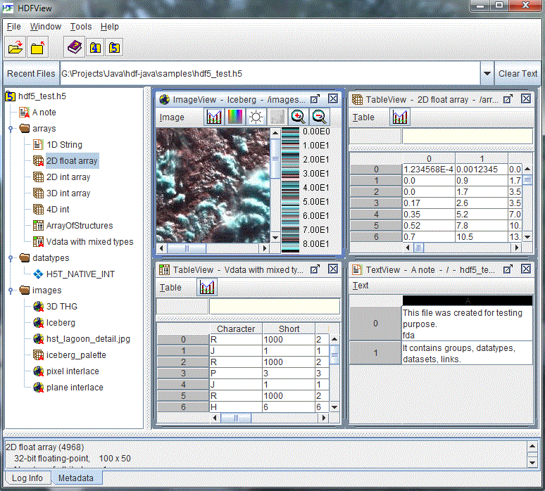
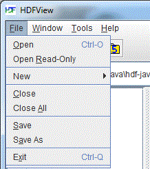
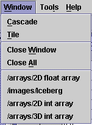
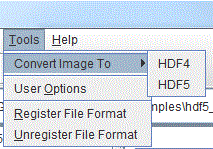
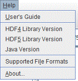
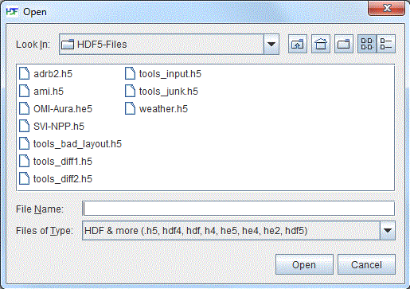
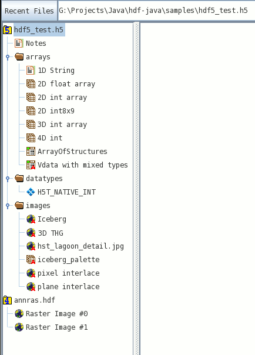
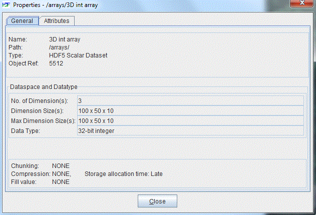
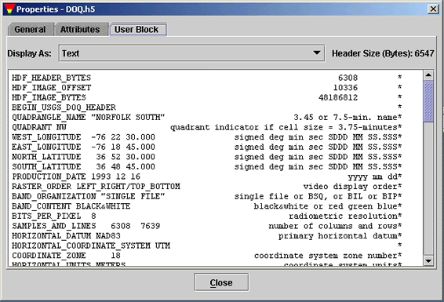

[Index] [1] [2] [3] [4] [5] [6] [7] [8]
This chapter assumes that you have installed HDFView and, along with “Chapter 3: The HDF Object Model,” is designed to help you get to the point where you are actually looking at HDF datasets.
When you first open HDFView, the HDFView window appears with an empty tree and data panel. After you open an HDF file, the structure of the file is displayed in the Tree Panel. The content of a data object is displayed in the Data panel by opening the data object.
The main window consists of five components: Menu bar, Tool bar, File bar, Tree panel, Data Panel, Info panel.

The main window
The Menu bar is at the top of the HDFView window. You can select a menu command from menu items or press key combinations from the keyboard to invoke the menu item's action without navigating through the menu hierarchy. For example, to exit HDFView, you can either press “Ctrl+Q” on the keyboard or select the “Exit” item from the “File” menu.
File menu
The File menu contains commands to open and close files, create and save files, and
exit HDFView.

File menu

Window menu
Tools menu
The Tools menu contains a list of commands to launch tools such as
image conversion and user options. The “User Options”
command launches a dialog box that allows you to change user preferences:
the path of the User's Guide, font size, delimiter and more. For more information,
see User Options.

Tools menu

Help menu
Select the “Open” command from the file menu or click the “Open” icon in the tool bar to invoke the local file manager, and select a file to open from the local file manager. Selecting “Open Read-Only” opens a file with read-only permission, which means that editing functions are disabled and changes are not allowed. By default, HDFView will only show files that have a file extension matching those specified in the User Options File Extension list (see File Extensions), however, the user can click on the drop-down box in the open file dialog box and select "All Files" in order to show all files if needed.

Local file manager (Windows)
An HDF file contains one or more objects, optionally grouped in a hierarchy. For general information about the structure and contents of HDF files, see the HDF documentation at HDF5 Documentation and HDF4 Documentation.
The structure of the file is displayed in the Tree panel, which is the left panel in the HDFView window. Data objects are represented as icons, and groups are represented by folders. An HDF file may contain groups, datasets (arrays), committed datatypes, and links.
The hierarchy of the file can be navigated by selecting folders to “open” a group, which displays the objects contained by the group. When an object is selected (by double clicking the object or by right clicking the object and selecting "Open" or "Open As" from the popup menu), the data is displayed appropriately in the data panel on the right.
You can open multiple files at one time. Files are listed as root objects in the tree. The following figure illustrates that an HDF5 file, hdf5_test.h5, and an HDF4 file, annras.hdf, are currently open.

Tree view
You can also search for data objects within a file by right-clicking on the file and selecting "Find" from the Context menu. Type in the name of a data object to look for and HDFView will highlight the first occurrence of the object within the file. The wildcard '*', which specifies that any number of characters can come after the text before the '*' character, can be used to broaden your search. As an example, searching for 'dataset*' will find any objects whose name is a variation on 'dataset', i.e. 'dataset', 'dataset_int', 'dataset75', etc.
Short status information and feedback messages are displayed in the information panel. Such information includes error messages and feedback from user's actions. Click on the “Log Info” and “Metadata” tabs to switch between viewing status information and viewing metadata.
To see the metadata of a data object, right-click the data object to show the Context Menu for that object. Then, left-click the "Show Properties" menu option to show the Properties dialog box, which displays metadata information such as name, type, attributes, datatype, dataspace, and members. If modules are installed and available, the metadata of an object can be displayed in a different manner by selecting the "Show Properties As" option from the Context Menu instead.

Properties dialog box
To view a user block in text, right-click the file node (the root group) and open the Properties dialog box. Click the “User Block” tab in the dialog box to show the user block information in text.

User block in text
[Index] [1] [2] [3] [4] [5] [6] [7] [8]